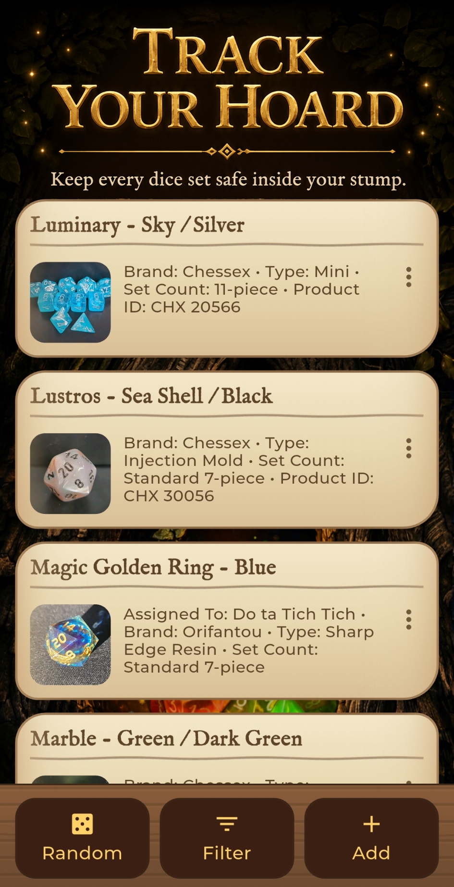
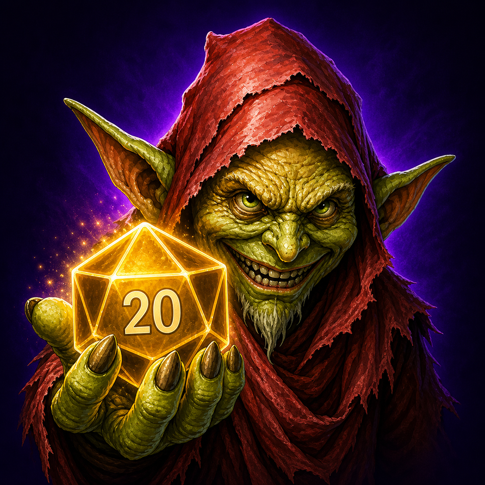
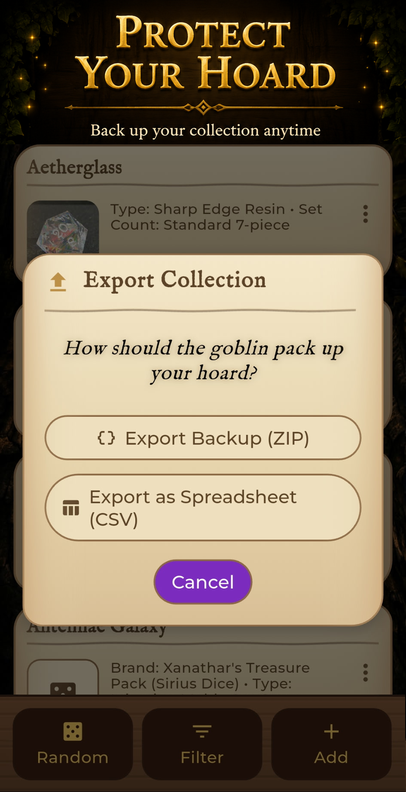
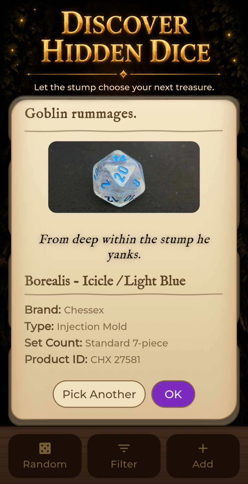

Catalogue Your Hoard
Save your dice sets with names, brands, types, notes, and collection details.
Track your tabletop dice sets, store photos, filter your collection, and keep your shiny math rocks ready for the next adventure.

Goblin's Dice Stump helps you keep track of your tabletop dice collection with a fun fantasy theme. Add dice sets, store details, attach images, filter your collection, and keep your hoard organized.

Save your dice sets with names, brands, types, notes, and collection details.

Keep your collection safer with export, import, and optional cloud features.

Let the stump choose a random treasure from your collection when inspiration runs dry.
Need help with Goblin's Dice Stump? Contact Hollowquill Studios at support@hollowquillstudios.com .